ずっと以前から訪ねてみたいと思っていた美術館。いつもこの近くまで来ていたのですが、入り口が見つけられなかったのです・・・。
大きな通りbd Saint Michelにはショッピングやカフェなどたくさんの人でいつも込み合っていますが、そこでちょっと角を曲がるとひっそりと美術館の入り口がみつかります。ここにあったのかーと、少し感動。
もともとこの場所には１世紀頃ローマ時代の公共浴場があったそうで、その後ブルゴーニュ修道士の邸宅が建てられ、今の美術館へと変移していきます（1843年）。建物の外観がすでに中世の雰囲気を醸し出しています。
美術館は日曜日でしたがそれほど込んでいることもなくガラガラでもなく、スムーズに鑑賞できました。思ったより大きな美術館で見所もたくさんあります。
中世と言えばまず中世の騎士。鉄のヘルメットや剣が展示してあります。こんな重いものを持って振り回していたんですね。マルタ島に行った時にもいろんな形のヘルメットを見ることができましたが、奇妙な形のものはどんな機能があるんだろうといつも不思議に感じてしまいます。観察してみてください。
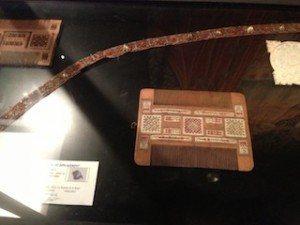
さて次に私の目にとまったものは、櫛（くし）です。なかなか可愛らしいデザインで現代でも通用しそうな一品です。どんな人が使ってたんでしょうね。想像が広がります。
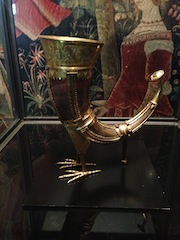
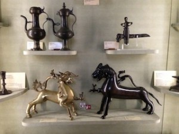
そして、おしゃれなカップ（左）。足がついています。右の写真はよーく見てもらうと分かると思うのですが、樽の栓がついています。ワインが入っていたのでしょう。これもまたかなりおしゃれなアイディア品です。
中世というと古いイメージですが、とてもカラフルで凝ったものを作っていたんですね。
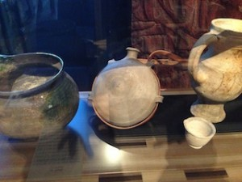
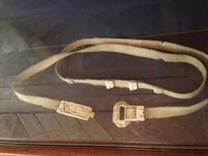
実用的なものも、現代と通じるものがあり感心しました。水筒やベルト。今とほとんど同じですよね。
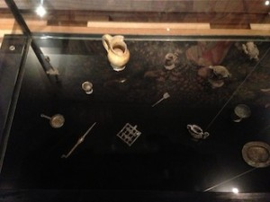
こちらは子供用のおもちゃ。ままごとセットと言ったところでしょうか。とてもリアルに作られています。
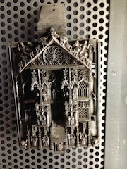
中世の家のドアにはこんな豪華な鍵がついていたのでしょうか（左）？右は女性の手に注目。キャンドルがのせられるようになっており、これも素敵だと思いませんか。かなり感動したのですが。
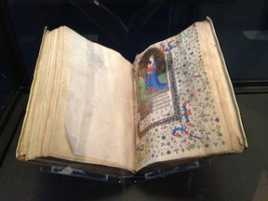
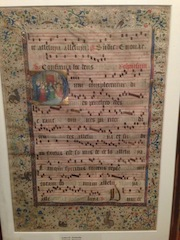
書物などもたくさん展示してありますが、その中で見つけた、これは楽譜でしょうか。音符が見られます。とてもカラフルですよね。
見るもの見るもの興味深いものばかりです。
さあ、ここでこの中世美術館での必見作品をご紹介しましょう。
Christ des Rameaux
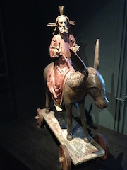
１５世紀終わりに菩提樹で作られたキリストがエルサレムに入ろうとしている場面を表す作品です。新約聖書によると、イエスは若い雄のロバに乗りエルサレムに入り、群衆が歓呼して迎えたということです。このキリストの移動祝日を正教会では聖枝祭、カトリックでは枝の主日、プロテスタントでは棕櫚の主日と呼び、この祝い事は４世紀頃から行われていたそうです。ちなみにフランス語では le dimanche des Rameauxと呼ばれます。
最初はこのロバに乗ったキリストを山車の上にのせていただけでしたが、１２世紀になりドイツ南部、スイス、あるいはアルザス地方で人々が車輪のついた板に固定する考えを得ます。そうすることによって町の中を引っ張って行進できるようになったのです。特に聖遺物でもなく奇跡的なパワーを持っているわけではないけれど、この新しい発想のおかげでこの彫刻が大変人々の間で人気を博したそうです。
しかしプロテスタントの宗教改革が起こり、カトリックの偶像崇拝を廃止しようとします。そしてたくさんの偶像が焼かれ破壊されてしまったのです。幸運にも難を逃れたものは納屋にしまい込まれ、長い年月をかけ、２００５年にこのクリュニー美術館によって獲得されました。今でもドイツのいくつかの町ではこの車輪のついたキリスト像を引っ張って行進しているそうです。
La Dame à La Licorne- A Mon Seul Désir
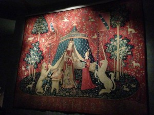
さあ、こちらは有名な貴婦人と一角獣です。６枚のタペストリーから構成され、それぞれにテーマが備わっていいます。味覚、聴覚、視覚、嗅覚、触覚とよーく観察してみると人間の五感が現れてきます。１５世紀終わりから１６世紀始めに制作され、１８４１年に発見さました。１８８２年にこの中世博物館に収められることになりましたが、６枚のうち５枚が５感を表しているのだと気づかれたのは１９２１年になってからだそうです（イギリス人中世研究家による）。
では最後の６番目のタペストリーは何を表しているのか？
唯一この６枚目のみ題字が記してあります。
“A Mon Seul Désir” 私の唯一の願望へ
手にはネックレスを持っているが、それを箱に片付けているのか、身につけようとしているのか？？？
その答えは未だにはっきりとはしていないのですが、１９世紀の初めに二人の歴史家BoudetとGlaezerがある仮定を提示しました。
彼らによると、これらの作品は五感による中世階級に沿っているのだと。つまり、物質的なもの/触覚、味覚からより精神的なもの/嗅覚、聴覚、視覚へと変化していく様だという。そして、その階級の行き着く先とは、もちろんl’esprit精神である。
貴婦人の手はおそらくネックレス（物質）をまさに放棄しようとしているところなのでしょう。精神という卓越した域に達するために。五感を超えた域です。
しかしながらあくまでも仮定に過ぎません。様々な研究家か様々な仮定をしています。例えば、ある者はそれは愛を示しているのだとか、ある者は精神とは全く逆の肉体的な欲望を表しているのではないかと。
貴婦人のそばに描かれている一角獣つまりユニコーンとは純潔さのシンボルであり、またその角は性的な暗示の働きをしているのだとか。
ちなみにこの美術館にはCorne de Licorneユニコーンの角という作品というかそのままの角が展示してあります。１４世紀のフランス王国では一番貴重な宝として収められていたようです。しかし、ユニコーンとは・・・想像の生き物。実際はこの角はNarval（その名も日本名、一角 イッカク）の角だそうです。
Musée de Cluny-National Museum of the Middle Ages
6 place Paul-Painlevé 75005 Pairs
Métro 10番線 Cluny-la Sorbonne
Open: 9:00am-5:45pm 火曜休館
中世の歴史の好きな人にはかなり面白いミステリーがたくさん詰まった美術館です。
ここに載せた情報はd’Art d’Artといういろんな美術作品をまとめた本から翻訳してみました。フランス語のできる方、おすすめの一冊です！


 イメージ：Wikipediaより
イメージ：Wikipediaより
{kind=link}